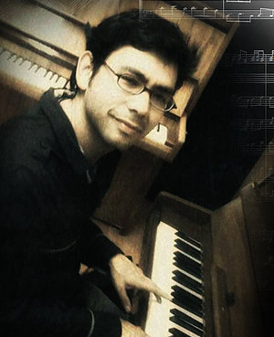

 Compositor, guitarrista y productor musical originario de Bogotá Colombia, inició sus estudios de manera particular a la edad de 8 años, estudio el bachillerato musical en el Colegio Integral Creativo, y a la edad de 16 años entró a la Escuela de Música Federico Chopin, realizó estudios de guitarra en la Pontificia Universidad Javeriana y en la Universidad INCCA de Colombia.
Desde Mayo de 1999 radica a México, año en el que asistió a un taller de música electroacústica, en el Centro Multimedia del Centro Nacional de las Artes, donde tuvo su primer acercamiento a los medios electrónicos. Realizó estudios de guitarra eléctrica e ingeniería de audio en la Escuela de música G. Martell entre 2000 y 2002. En el año 2007 ingresa a la licenciatura en composición en la Escuela Nacional de Música de la U.N.A.M. Allí asistió a diferentes talleres en el Laboratorio de Informática Musical y Medios Electrónicos: secuenciadores, ingeniería en audio y el Seminario de Medios Audiovisuales. También impartió clases en ese departamento como parte de sus prácticas pedagógicas. En 2012 recibe su título de licenciado en composición. Dentro de sus maestros estuvieron Lucía Álvarez, Luis Pastor O’ Farril, Leonardo Coral y Francisco Viesca.
Desde el año 2010 se desempeña como compositor en el Canal de televisión TEVEUNAM donde ha participado en diferentes producciones: Inventario, Las Respuestas de la Ciencia, Observatorio, República Laica, Café de Nadie, Navegantes de las islas, Revista de Universidad de México, entre otras. También ha realizado Música para el programa Creadores Universitarios del canal FORO TV de Televisa.
Ha escrito más de 30 obras para música de cámara, de las que se destacan: Aguas: Tríptico para guitarra y flauta, Reflexiones pieza serial para guitarra sola, Espejismos para piano, Bachata Ritual, para percusiones, Ocaso para saxofón guitarra eléctrica y contrabajo, entre otras. Sus obras han sido interpretadas en diferentes salas de concierto en México y Colombia.
Ha impartido clases de música y guitarra en diferentes centros educativos de la Ciudad de México como Escuela de música G. Martell, Academia Estudio y Arte, Orquesta Popular de Magdalena Contreras, Escuela de Música 2.99, Academia de Música Fermatta, Instituto Educativo Olinca, y en la Secretaría de Educación pública.
Ha sido beneficiado con las becas de Servicio Social, y Titulación de la Secretaría de educación Pública de México. Programa de becas de la Universidad Nacional Autónoma de México en 2011, 2012 y 2013. Fue becario de excelencia de la U.N.A.M. en 2014 y 2015.
En agosto de 2017 recibe el título de Magister en música en la Pontificia Universidad Javeriana.
Actualmente reside en Colombia y desempeña como docente de armonía y arreglos en la Escuela de Música Fernando sor.